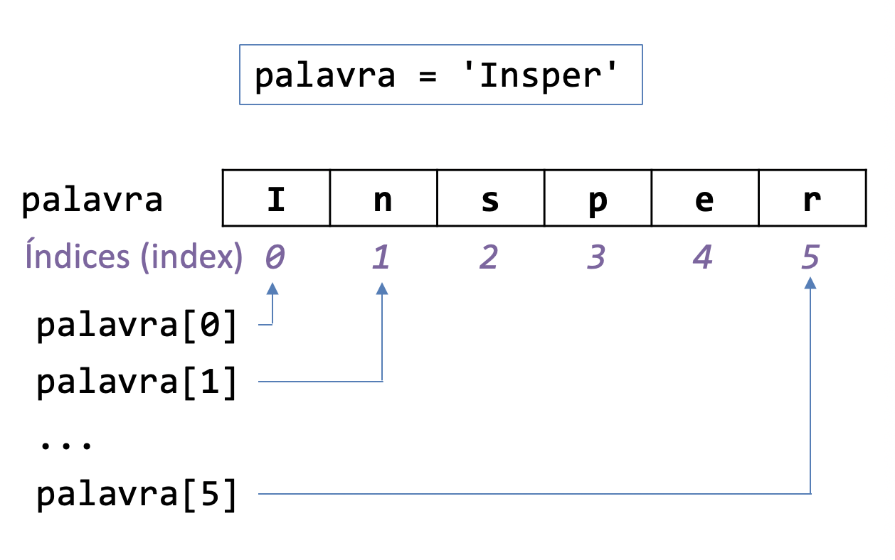
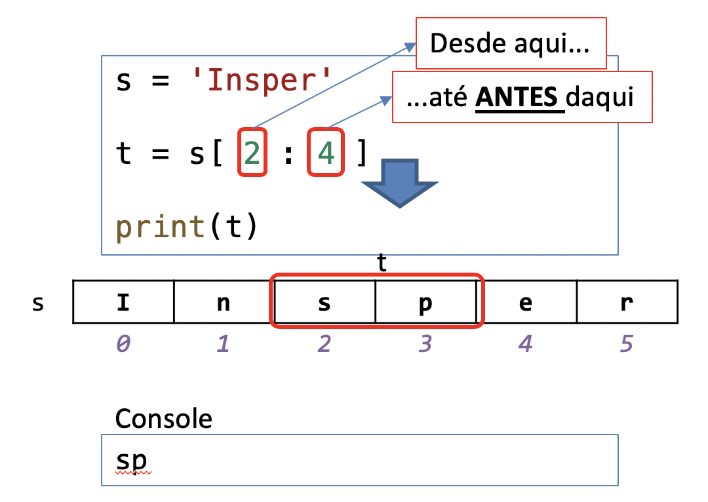
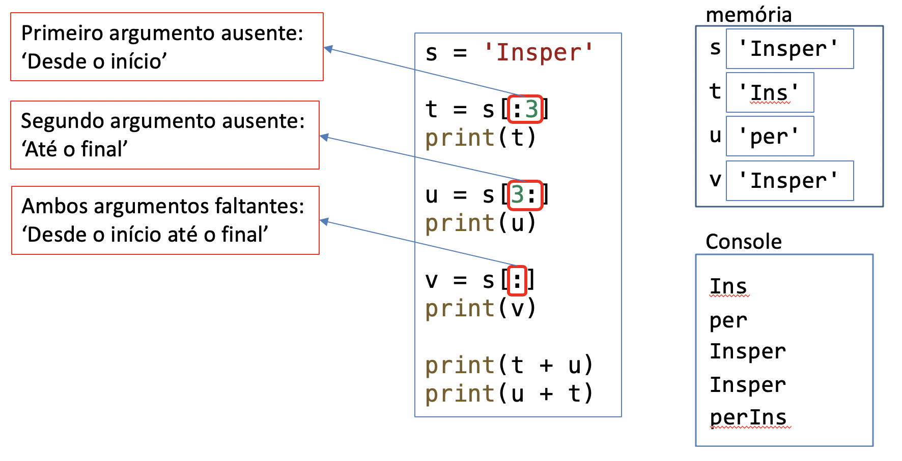

08 - Strings e Fatiamento¶
Trabalhamos com strings desde a primeira aula, quando aprendemos a mostrar um texto na tela usando o print. Hoje já sabemos fazer muito mais do que só mostrar um texto na tela! Ao final deste handout, o objetivo é que você seja capaz de utilizar operações comuns em strings, como encontrar e substituir substrings, limpar espaços em branco e obter fatias (slicing) de uma string ou lista.
Veremos que strings são muito parecidos com listas em diversos aspectos. O primeiro deles é que assim como em uma lista, os caracteres de uma string também podem ser acessados por índices:

EXERCÍCIO 1¶
EXERCÍCIO 2¶
Métodos de uma string¶
O que são métodos?¶
Quando trabalhamos com listas sabemos que é possível usar o .append() para adicionar um elemento. O Python sabe em qual lista ele deve adicionar o novo elemento porque o .append() é sempre precedido pelo nome da lista. Por exemplo:
lista1 = [1,2,3,4]
lista2 = [9,8,7,6]
lista1.append(5)
O número 5 será adicionado à lista1, pois o append(5) está associado a ela através do ponto (.). Esse tipo especial de funções é o que chamamos de método (lembre-se que normalmente os argumentos de uma função são passados dentro dos parênteses). Por enquanto isso é tudo o que precisamos saber sobre um método: é uma função especial que está associada a um objeto (no caso uma lista) específico. Trabalharemos um pouco mais com métodos durante o projeto final de Design de Software. Para aqueles que forem seguir em Engenharia de Computação, o conceito de método será apresentado mais formalmente na disciplina Desenvolvimento Colaborativo Ágil.
Alguns métodos de strings¶
Vimos em aulas anteriores que é possível criar uma nova string a partir de outras duas strings usando o +: 'abcd' + 'efgh' vai gerar a string 'abcdefgh'. Assim, não precisamos do .append() (de fato, ele nem funciona para strings). Mas existem diversos métodos específicos de strings que podem ser bastante úteis. Uma lista completa pode ser encontrada na documentação, mas vamos focar em alguns métodos principais:
find: método que retorna a posição da primeira ocorrência de uma dada string em outra. Se não encontrou, retorna -1. Por exemplo:'abcde'.find('c')devolve o número2.replace: método que recebe duas strings e retorna uma nova string com todas as ocorrências da primeira substituídas pela segunda. Por exemplo:'abcba'.replace('b', 'd')devolve a string'adcda'.strip: método que não recebe nenhum argumento e retorna uma nova string removendo os caracteres em branco (incluindo o caractere especial'\n') de ambas as pontas. Por exemplo:' uma frase \n'.strip()devolve a string'uma frase'(note que o espaço do meio não é removido).split: método que recebe uma string delimitadora (ex:',') e retorna uma lista formada pela separação da string original pelo delimitador. Por exemplo:'uma palavra, outra palavra, última palavra'.split(',')devolve a lista['uma palavra', ' outra palavra', ' última palavra']. Se nenhum argumento for utilizado o delimitador utilizado será o espaço em branco. Por exemplo:'palavras separadas por espaço'.split()devolve a lista de strings['palavras', 'separadas', 'por', 'espaço'].join: método que recebe uma lista de strings e retorna uma única string separada pelo delimitador. Por exemplo:' '.join(['a', 'b', 'c'])devolve a string'a b c'. Outro exemplo:','.join(['a', 'b', 'c'])devolve a string'a,b,c'.
EXERCÍCIO 3¶
Extraindo substrings com fatiamento¶
A operação de fatiamento permite realizarmos um recorte da string. A sintaxe é semelhante ao acesso a um caractere usando o índice, mas ao invés de um número nós passamos um intervalo:

A semântica é semelhante ao range: o fatiamento inclui o primeiro índice e não inclui o segundo. Assim, no exemplo acima, o fatiamento s[2:4] inclui o índice 2, mas não inclui o 4. Portanto apenas os caracteres nos índices 2 e 3 estão presentes no resultado do fatiamento.
Alternativamente, podemos omitir um (ou ambos) dos índices:

Assim como no range, podemos passar um terceiro argumento opcional para um fatiamento. Esse terceiro argumento indica o tamanho do pulo, ou seja, de quanto em quanto o índice deve ser aumentado (por padrão ele aumenta de 1 em 1). Por exemplo, 'abcdefghij'[0:10:2] vai retornar uma nova string do índice 0 ao 9 pulando de 2 em 2, ou seja, a string 'acegi'.
Além do fatiamento, pode ser útil usarmos índices negativos. Os índices negativos tem um efeito semelhante aos índices positivos, mas vão do final para o começo. Por exemplo, o índice -1 é o último elemento, o índice -2 é o penúltimo elemento, o índice -3 é o antepenúltimo elemento, e assim por diante.

No exemplo acima apresentamos uma técnica bastante utilizada para inverter uma string, que é o uso do fatiamento [::-1]. Ele pode ser útil em alguns exercícios do servidor.
EXERCÍCIO 4¶
EXERCÍCIO 5¶
Fatiamento em listas¶
Dissemos no começo do handout que existem muitas semelhanças entre listas e strings em Python. Uma delas é que também é possível realizar fatiamentos de listas, da mesma maneira como fizemos com strings.